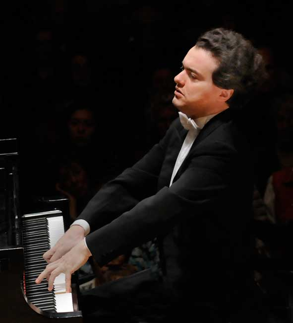

CARNEGIE HALL presents...
Piano Performance of
Evgeny Kissin
Wednesday
February 22, 2016
8PM
Stern Auditorium
Perelman Stage
Evgeny Kissin is always exciting, but never more so than when he performs music by composers with whom he is most closely associated. Kissin returns to Carnegie Hall with works by his repertoire staples-Chopin and Liszt-as well as sonatas by Beethoven and Prokofiev.
The nocturne form was conceived by Irish composer John Field, but Chopin reinvented it with an inspired infusion of song-like melodies. While based on a traditional Polish dance, Chopin's mazurkas are dazzlingly original showpieces that offer striking harmonic invention and breathless flights of technical brilliance.
Program
BEETHOVEN Piano Sonata No. 21 in C Major, Op. 53, "Waldstein"
PROKOFIEV Piano Sonata No. 4 in C Minor
CHOPIN Nocturne in B-flat Minor, Op. 9, No. 1
CHOPIN Nocturne in B Major, Op. 9, No. 3
CHOPIN Nocturne in C Minor, Op. 48, No. 1
CHOPIN Mazurka in F-sharp Minor, Op. 6, No. 1
CHOPIN Mazurka in C-sharp Minor, Op. 6, No. 2
Encores
CHOPIN Waltz in B Minor, Op. 69, No. 2
LISZT Etude No. 5 in E Major, "La Chasse" (after Niccolo Paganini, Caprice No. 9 in E Major)
PROKOFIEV March from The Love for Three Oranges
FREDERIC CHOPIN Selected Nocturnes and Mazurkas
Chopin revolutionized piano writing in a large body of nocturnes, mazurkas, waltzes, and other solo pieces that imbued the brilliance of the salon style with unprecedented poetic depth. The nine pieces on the program illustrate the increasing complexity of Chopin's music as he expanded his stylistic horizons in the 1830s.
LUDWIG VAN BEETHOVEN Piano Sonata No. 21 in C Major, Op. 53, "Waldstein"
The "Waldstein" Sonata, named for one of Beethoven's noble patrons, followed hard on the heels of the "Eroica" Symphony, and both works exemplify the boldly heroic style of the composer's middle period. A distinctive feature of the C-Major Sonata is its slow movement, which Beethoven substituted for its original Andante.
Gallery
